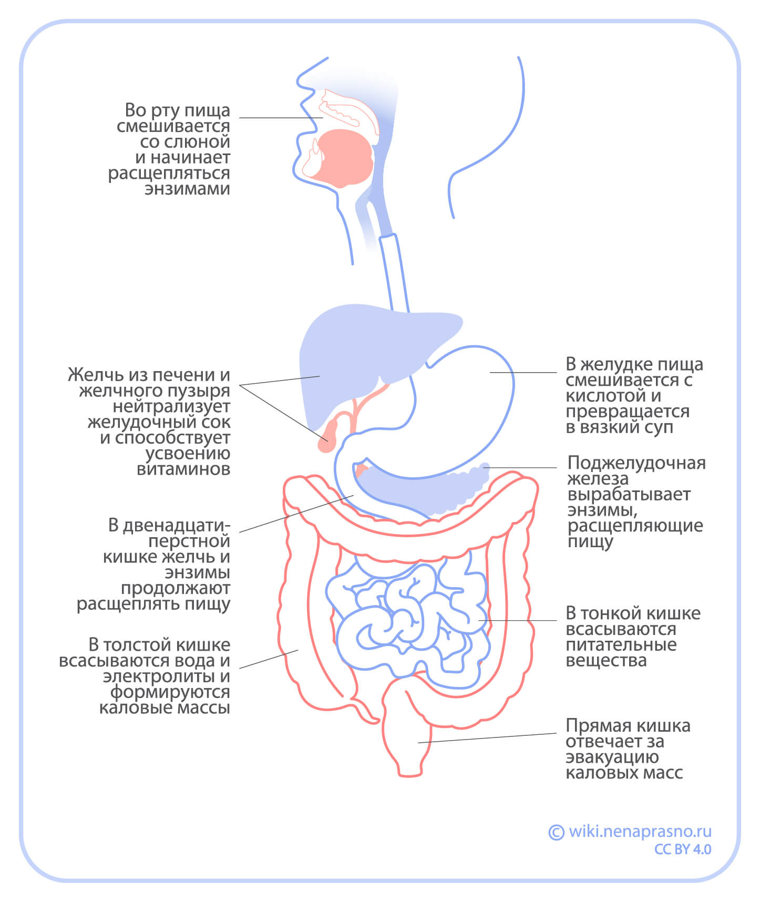

Функции кишечника
Какие функции выполняет кишечник?
Организм человека для своего существования и нормальной работы требует «строительных» молекул: аминокислот, сахаров (углеводов), жирных кислот, витаминов, микроэлементов.
Эти вещества содержатся в пище, но прежде ее нужно переработать (переварить), то есть расщепить до молекул, которые организм уже сможет усвоить и использовать. Все, что не нужно, необходимо вывести из организма. Этой работой и занимаются различные отделы кишечника.
Функции кишечника — это:
Переработка пищи и расщепление больших молекул на малые. Происходит преимущественно в желудке и в двенадцатиперстной кишке. В желудке/тонкой кишке пища может находиться до шести часов.
Усвоение аминокислот, сахаров, жирных кислот, витаминов, необходимых для существования организма. Происходит преимущественно в тонкой кишке. Всасывание воды осуществляется в толстой кишке.
Иммунная защита от микробов (бактерий, вирусов, грибов, паразитов). Осуществляется всеми отделами кишечника, однако интенсивнее всего тонкой кишкой и аппендиксом.
Выделение — выведение из организма как непереваренных остатков пищи, так и потенциально опасных для организма веществ: солей тяжелых металлов, некоторых лекарственных препаратов и т. д.
Процесс превращения пищи, формирования каловых масс и их выделения может занимать до нескольких суток.
Как работает кишечник
Пища, попав в желудок, проходит длинный путь по желудочно-кишечному тракту. Продвижение пищи происходит за счет перистальтики кишечника — согласованных волнообразных сокращений его стенок.
По мере движения пищи по кишечнику происходят такие процессы:
Переваривание
Переваривание пищи начинается еще в ротовой полости — там крупные кусочки пищи пережевываются до более мелких, которые способны пройти по пищеводу в желудок.
Для дальнейшего расщепления пищи на молекулы нужны пищеварительные ферменты (особые белки). Большая часть ферментов находится в желудке и двенадцатиперстной кишке. Ферменты вырабатываются в поджелудочной железе и печени и выделяются в двенадцатиперстную кишку. Именно в ней и происходит основной процесс переваривания, который может занимать до шести часов.
Всасывание
В процессе переваривания пищи образуются аминокислоты, сахара, жирные кислоты. Чтобы использовать этот «строительный материал», он должен попасть из кишечника в кровь. Поэтому слизистая (внутренняя) оболочка кишечника «захватывает» молекулы, получившиеся в процессе переваривания, и переносит их в кровь.
Аминокислоты, сахара, витамины и микроэлементы напрямую всасываются в кровь. В то же время у жиров достаточно сложный путь усвоения с участием лимфатических сосудов. Весь этот процесс может занимать от 40 до 120 минут.
Помимо питательных веществ, организму нужна вода. Он получает ее как из жидкостей, так и из пищи. Процесс усвоения воды идет гораздо быстрее, чем усвоение других молекул. Осуществляется он главным образом в толстой кишке.
Выделение
Не все, что содержится в пище, организм может переварить и усвоить. Ненужные или вредные вещества превращаются в каловые массы и выводятся кишечником.
Функцию выведения кала (дефекации) выполняет прямая кишка. Она является резервуаром для кала и освобождается по мере заполнения. После операций на толстой кишке (в особенности на прямой кишке) резервуарная функция прямой кишки может нарушаться.
Процесс выведения кала важен для организма, поскольку с ним выводится много вредных веществ. Поэтому заболевания кишечника, при которых процесс выведения замедляется и нарушается, опасны.
Иммунная защита
Кишечник напрямую сообщается с внешней средой. В ней много чужеродных молекул и микробов. Кишечник защищает от них организм с помощью:
Собственной микрофлоры, которая препятствует оседанию на слизистой оболочке кишки опасных микробов,
Иммунной системы кишки. Она состоит из антиген-представляющих клеток («пограничников», распознающих «чужака» и сообщающих об этом своим товарищам — лимфоцитам) и лимфоидной ткани (системы лимфатических сосудов, лимфатических узлов и лимфоцитов). Особенно много лимфоидной ткани в аппендиксе. Это позволяет ему осуществлять иммунную защиту от чужеродных микроорганизмов и образующихся опухолевых клеток.
Чужеродная молекула (или микроб, которому принадлежит эта молекула) распознается в слизистой оболочке кишки. В лимфатических узлах происходит представление «чужака» (антигена) лимфоцитам. После распознавания антигена в лимфоузлах образуются антитела, а также специально «обучаются» лимфоциты, нацеленные на уничтожение этой молекулы.
Иногда иммунная система кишечника дает сбой, что приводит к возникновению хронических воспалительных заболеваний кишечника.
Также в лимфатические узлы может метастазировать рак толстой кишки. Поэтому их удаляют при операциях по поводу рака.
Выводы
Основные функции кишечника — это переработка пищи, усвоение необходимых молекул, выведение опасных веществ и защита от чужеродных микроорганизмов.
Переработка пищи и выведение ненужных веществ — результат согласованной работы ферментов, желчных кислот, перистальтики кишечника.
Иммунные клетки кишечника оберегают организм от микробов. Если в работе иммунной системы кишечника происходит сбой, могут возникнуть воспалительные заболевания кишечника.